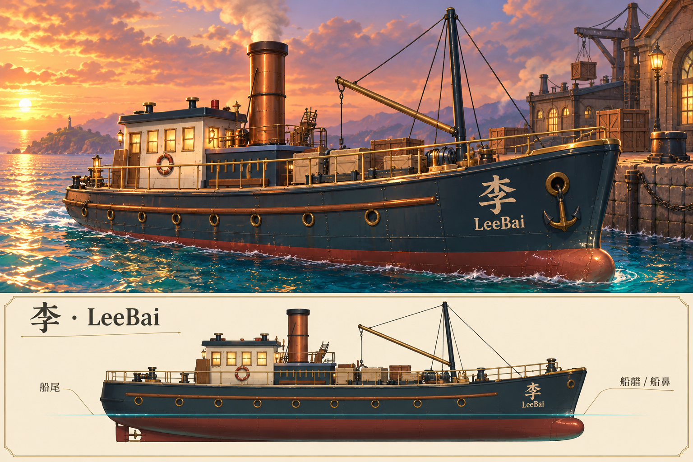

五小时批次已于北京时间2026年10月12日03:23截止，临时自动任务已删除。以下区分正式源码、CPU验证和实景GPU验收。
检查正式李 / LeeBai · 检查正式湖沼 · 进入正式游戏
| 项目 | 本批改动 | 证据与限制 |
|---|---|---|
| 李 / LeeBai 船形 | 收尖前伸船艏、圆鼻、收拢艉、龙骨；两侧大字船名；英文浸水已按实际字形像素修正 | 封闭壳、码头与字体CPU记录 |
| 船色与设备 | 深青上壳、红褐下壳、米白驾驶舱、暖铜单烟囱；护舷、舷窗和铆钉贴新壳 | 球面水线 / 附着件；新GPU待验 |
| 绿植和岩色 | 自然聚散、珊瑚暖顶灰紫侧；368株追加大小层次，总461株与5绘制批保留 | 4项CPU检查；新构图效果待实景复核 |
| 水色 | 增强青绿、珊瑚色并减少白雾洗色 | 正式源已改；CPU通过不等于GPU颜色验收 |
| 五花船 | 无固定花茎，双桨推进；世界单程1/1.5/3/1.5/3米，十孩子身份保留 | 航线CPU记录 |
| 喂鲸游泳者 | 修正桨叶近擦路径，保留游泳换气喂食 | 150秒采样最近0.875米；补测至900秒，仍不保证连续碰撞或全部相位 |
内嵌浏览器控制工具当前缺失，新GPU截图、同机位目标对照和完整场景帧率尚未验收。没有宣称90分或性能提升。目标图、CPU投影和旧实景图不能代替新游戏画面。

十个正式源的HTTP一致性记录；JEV实际用量记录：紧凑文字判断与缓存，不进行看图或自动验收，没有对照节省百分比。